重做汉白玉、玉矿、龙晶矿和玉髓修补炉；新增铜镜、玉佩与雷纹护符三个独立候选。全部直接在 16×16 网格绘制。
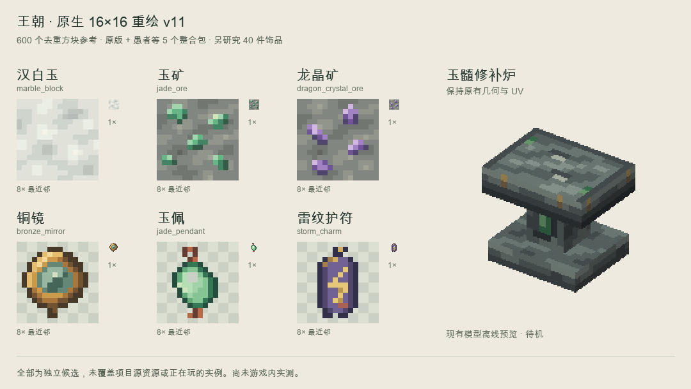
marble_block
原生 16×16 · 点击取 PNG
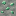
jade_ore
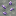
dragon_crystal_ore
bronze_mirror
jade_pendant
storm_charm
左起为项目原图、上版 v10、新版 v11，以及新版 3×3。每张放大图旁保留 1×。
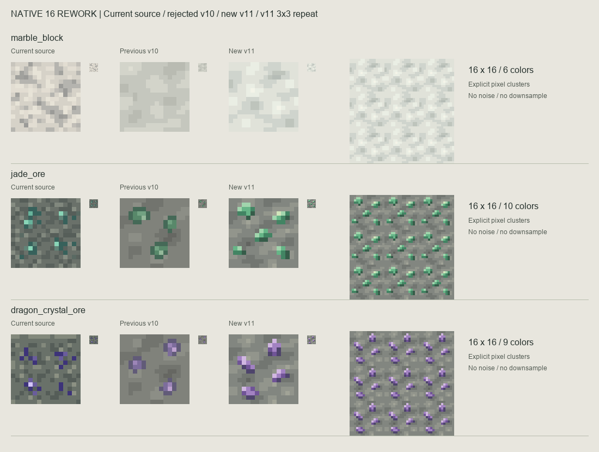
铜镜、玉佩、雷纹护符。不同剪影；暗、亮背景和 16px 物品栏尺寸均可检查。
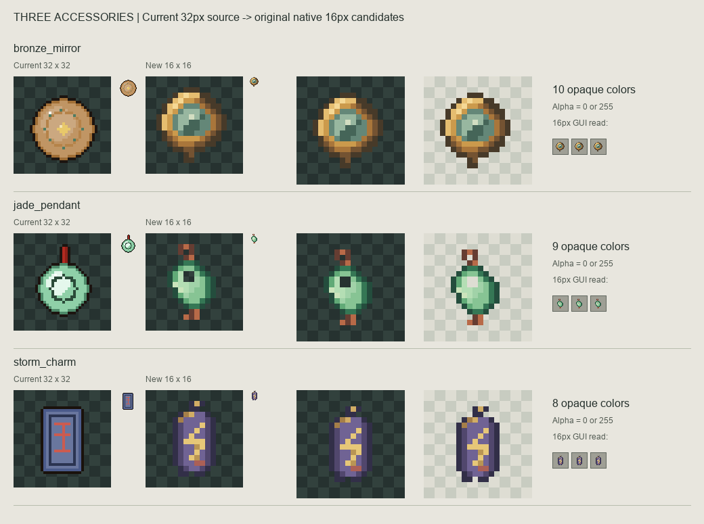
左为项目原图，中为新版待机，右为新版激活。顶部受击面与正面指示槽分工；几何、UV 保持原样。离线投影，非游戏截图。
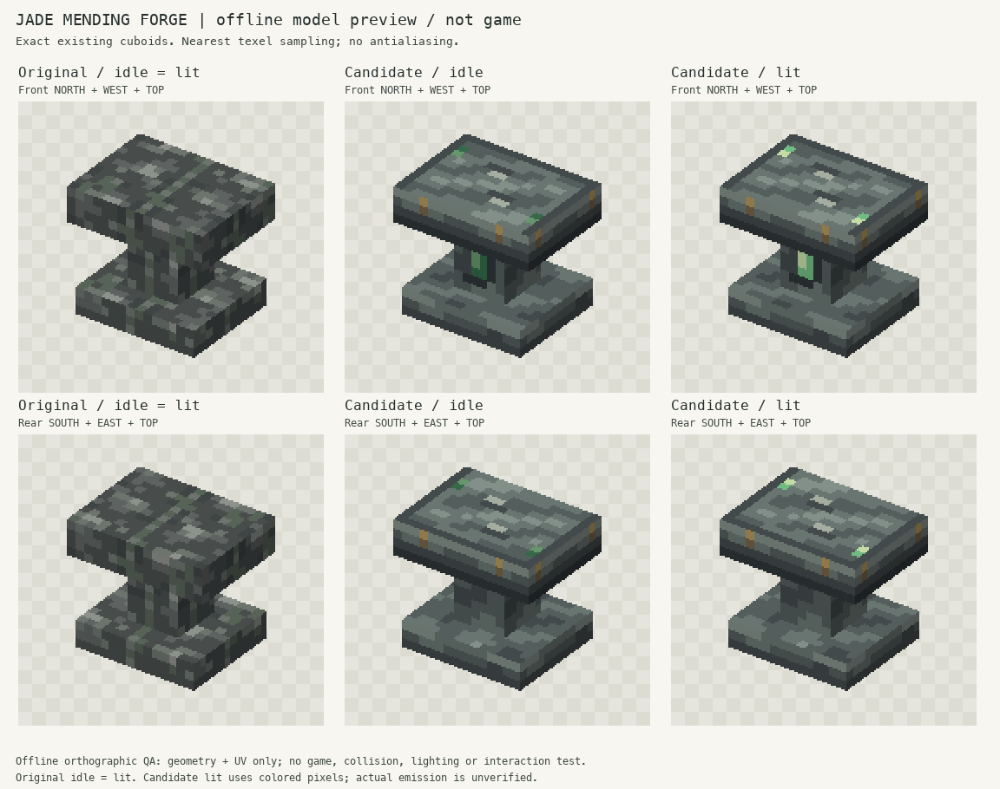
原版石砖、新汉白玉、已认可且未改的宫砖、原版石头。对照图不包含在候选资源包内。
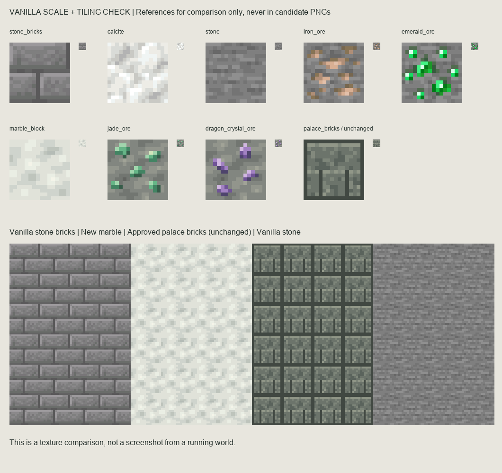
这是启用新汉白玉后的关联外观。没有修改盆的模型、玉边、孔洞或行为。
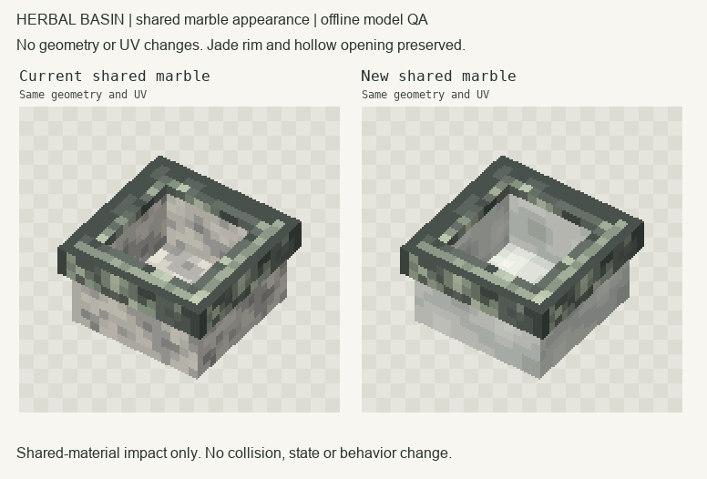
贴图图集的重复铺贴只用于检查色块，不能将它当作完整立方体六面共用纹理。
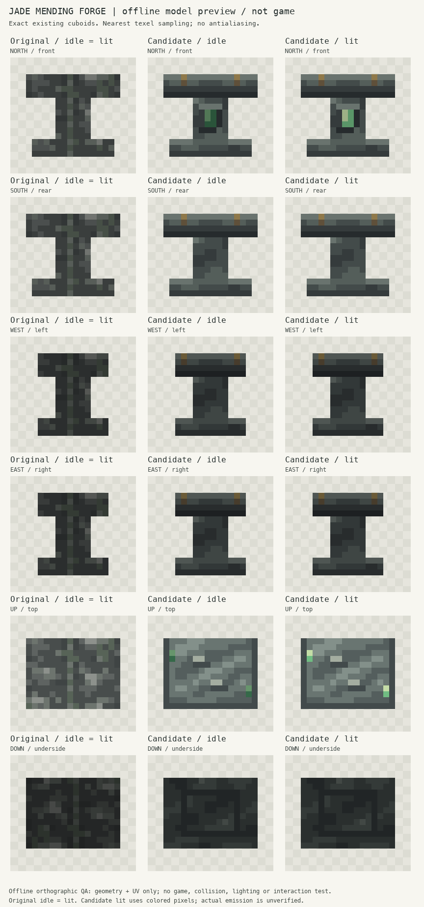
底材、顶面、前后侧面按已有 UV 分配，激活仅改变局部颜色，无新增动画。
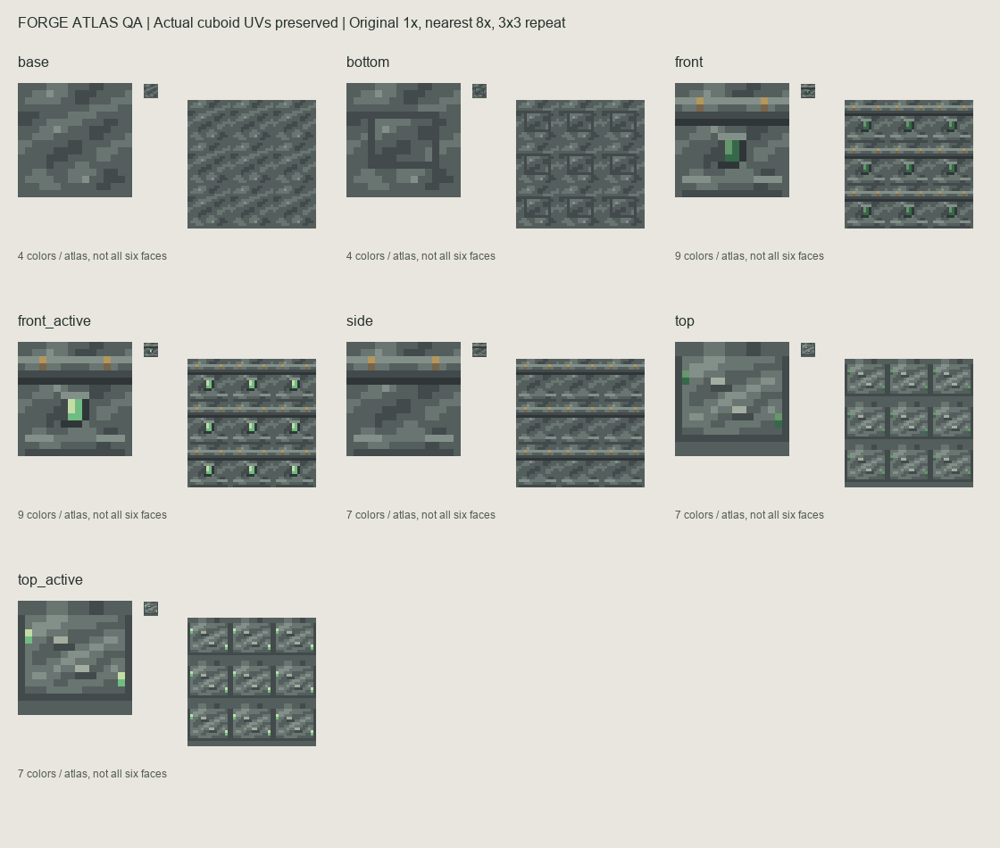
以下图片不自动拉大；浏览器在 100% 缩放时展示其原始像素尺寸。
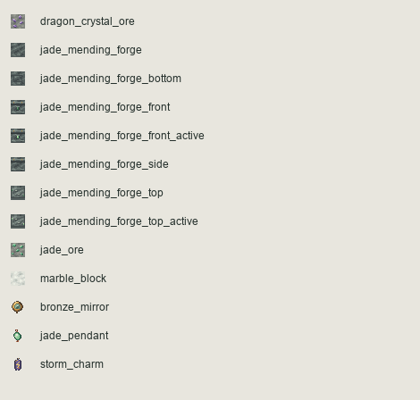
从本机真实 blockstate 出发，解析父模型和面纹理绑定，取得一张实际使用的 16×16 代表面。600 个 ID 和像素内容均去重，不用动画帧、多面、楼梯台阶或蜡化同图凑数。每个样本有 JAR、模型链、纹理路径与哈希。
研究重点是短色簇、内嵌矿物、清晰剪影、功能面分工。全部新图案独立绘制；没有复制参考纹章或将第三方像素图换色。每个参考仅一张代表面，不等于已在游戏里检查了整个方块。
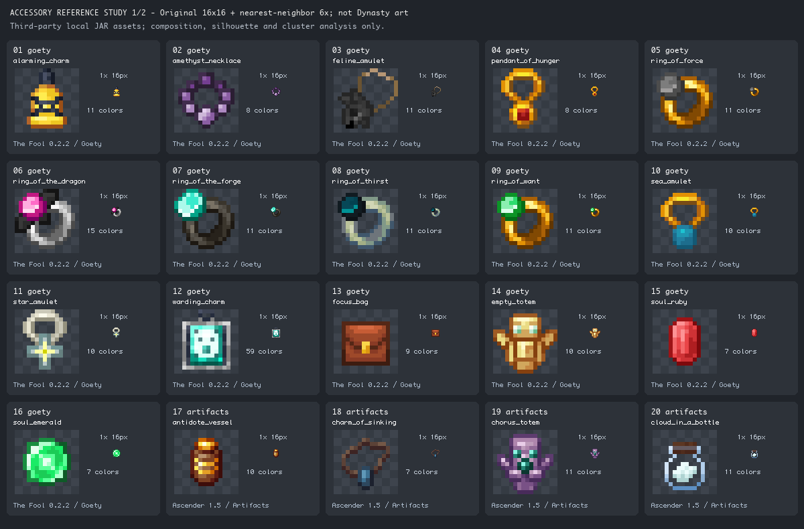
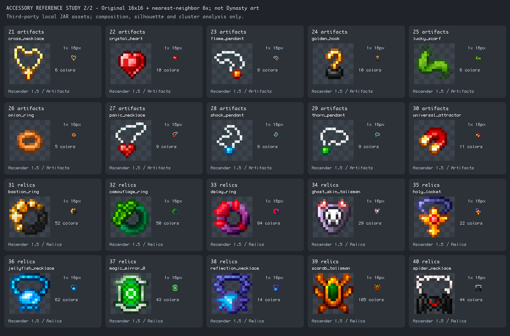
第三方参考图属于相应游戏或模组，仅供本地研究对照，不在候选资源包内。整合包名称表示安装来源。
可选资源包适配项目 Minecraft 1.20.1 / pack_format 15，依赖已有 Dynasty 模组。三个饰品沿用 item/generated；修补炉仅改纹理引用并为现有 lit 状态增加局部亮色，3 个长方体及其 UV 没有变化。亮色不代表自发光渲染已实现。
宫砖、已认可饰品、展示架和并行祭坛建模内容保持。未动公共注册、碰撞、存档、实例或模组列表。其他材料和盔甲本轮未批量重绘。